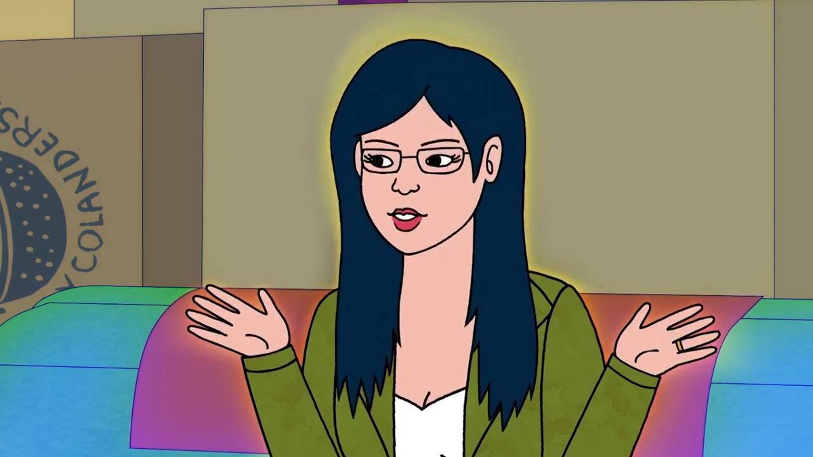

About Diane Nguyen
Diane Nguyen (born March 19, 1980) is a human Vietnamese-American writer, "misunderstood intellectual," and third-wave feminist from Boston.
Diane's Charactertistics
- Diane is a nice, intelligent, nerdy third-wave feminist woman
- shy at social gatherings
- bold and upstanding when she sees it's necessary
Family, Frienships and Relationships
Diane is the only daughter of Pa Nguyen and Ma Nguyen, the younger sister of Tommy, Marty, and Artie, and the adoptive younger sister of Gary.
She lived with her well off and famous ex husband, Mr. peanutbutter. She is currently married to Guy and a step mother to Sonny.
She was employed by Bojack horseman as a ghostwriter to write his biography, and was a former best friend of his.
More about some of diane's friends: